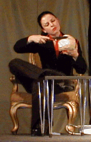

Schulmeister
|
|
|---|---|
Von Christian Dietrich GrabbeDer Teufel hat einen roten Schlips um. Seine Großmutter führt Kaiser Nero nach Domina-Art an der Kette und haut ihn in der Hölle wohl ordentlich durch. Der Lehrer säuft und schlägt seinem tölpelhaften Schüler die Lektionen im wahrsten Sinne des Wortes um die Ohren. Der hässlichste Wicht mit der längsten Nase bekommt die schönste Prinzessin. Und das gucken sich 1000 Leute bei drei Aufführungen amüsiert an: Bei Zeus, da kann ich nicht meckern. Die Vorlage ist aber auch gut, alles was recht ist. Mein Geniestreich aus dem Jahre 1822. Potzblitz: Er gewinnt durch die behutsame Aktualisierung noch an Witz. In der Tat. So können selbst Lästerzungen wie Ingo Appelt oder Stefan Raab daraus etwas lernen. Hand aufs Herz: Lachfratzen wie diese beiden rechne ich zu meinen würdigen Nachfolgern. Wenn ihr nun fragt: "Wo bleibt denn da der Grabbe?", holt euren Taschenrechner raus und rechnet nach: 10 Prozent Eingriff billige ich Regisseur Bernd Frigger zu. Ergo sind 90 Prozent des aufgeführten Textes von mir, original, Wort für Wort, Buchstabe für Buchstabe. Auf eines lege ich dabei allergrößten Wert: Den Kondom-Gag habe ich bereits 1822 ersonnen. Jawoll! Der ist nicht draufgesattelt von den Grabbianern. Eigentlich mag ich es überhaupt nicht, wenn jemand meine genialen Sätze verstümmelt. Aber die satirischen Spitzen, die ich 1822 abgefeuert habe, sind einem heutigen Publikum wohl kaum mehr verständlich. Die ich damals gemeint habe: Gott hab sie selig, ihre Knochen bleichen in der Erde. Das ist doch richtig gierig, wenn der Schulmeister einen Schluck aus der Flasche nimmt, der einem Harald Juhnke zur Ehre gereicht hätte, oder wenn dieses rassige Teufelsluder den Judaslohn für das Brautopfer mit 12000 Mark in Telekom-Aktien anbietet: galaktisch. Das hätte glatt von mir sein können. Schon fürchte ich, zur falschen Zeit gelebt zu haben. Beiseite gesprochen: Meine Spitzen gegen die zeitgenössische literarische Szene haben die Gymnasiasten aus dem Jahr 2001 gut übersetzt. Da klappen einem wachen Geist doch die Fußnägel hoch, wenn er Rosamunde Pilcher & Co inhallieren soll. Ich verrate jetzt mal ein Geheimnis: Zur Höchstform laufe ich immer dann auf, wenn ich mich mit anderen scheinbar um einen Dichter-Platz im Olymp streite. Alles nur Strategie und Tarnung. Erst ärgere ich mich furchtbar über diese "Flaschen leer", aber dann trickse ich die Konkurrenz aus, indem ich mich vom Kampfplatz verdrücke und in die Zuschauerränge steige. Seht, wie lächerlich sich die Götter auf dem Rasen abstrampeln: Es lebe die Satire! Die Welt ist ein Theaterstück, Geschichte eine Schmierenkomödie:
Diese Überzeugung kleide ich immer wieder gern in Dichtkunst. Zugegeben:
Mein Spott richtet sich eigentlich gegen die Gesellschaft des frühen 19. Jahrhunderts
und die Geschichte der Haupt- und Staatsaktionen. Aber wenn ihr genau hinseht,
könnt ihr Züge davon durchaus auch in eurer eigenen Zeit entdecken.
Die Welt ist ziemlich absurd: Dieses Gefühl treibt mich literarisch an und
bestimmt auch das Formgesetz meiner Komödie "Scherz, Satire, Ironie und tiefere Bedeutung".
|
Nicht, dass mich die Abwesenheit von Sinn im Leben besonders quälen würde. Dagegen gibt es hochgeistige und hochprozentige Mittel. Aber mal ganz ehrlich: Ich glaube, ich überwinde mein Leiden an den absurden Verhältnissen meiner Zeit mit dem Mittel künstlerischer Distanzierung. Neulich habe ich ein bisschen Descartes gelesen. "Ich denke, also bin ich", schreibt der. Wie langweilig. "Ich lästere, also bin ich": Das ist doch viel amüsanter.  Jetzt habe ich aber genug philosophiert. Schon seltsam, da ich doch von Philosophen eigentlich nicht besonders viel halte. Das sind Leute, die Wasser lassen, um anschließend die weltverändernde Wirkung dieser "Entäußerung" feierlich zu deklamieren. Ich bin euch eine Beurteilung eurer Leistung schuldig. Also: Magdalene Fischer gibt dem Teufel ein betont weibliches Profil. Gefällt mir. Eine süße freche Katze fährt die Krallen aus, um gewaltig böse und gemein zu sein. Gefällt mir sehr. So richtig niederträchtig und kaputt wirkt Maurice Höwlers Schulmeister: Mit in die Höhe geschraubter Stimme verleiht er meiner Figur, die moralisch korrumpiert ist und der Alkoholsucht erliegt, zusätzlich noch etwas Eunuchenhaftes. Teufel auch, so müssen diese elenden Schulmeister gestaltet sein, die meinen, die Weisheit mit Löffeln gefressen zu haben. Szenenapplaus gibts ordentlich auch fürs Gottliebchen, den tölpelhaften Schüler des ramponierten Schulmeisters. Recht so. Eine mitreißende Show liefert Katja Chevtsova als Möchtegern-Dichter Rattengift ab: So schwärmerisch, realitätsblind und selbstverliebt hat noch niemand meine Verachtung für diese Spezies auf die Bühne gebracht. Respekt, Respekt.Jede Menge Szenenapplaus heimst auch Alexis Weege als Zorro des Stückes ein. Marina Erfkamp als Liddy, Baronin Sina Schlüchtermann, Johannes Komm von Wernthal, Till Wiebke Mollfels, Katja Chevtsova Tobies, Naturhistoriker, Schmied, Gretchen, Bediente und, und, und: Sie alle erweisen sich als Idealbesetzung für das ehrgeizige Vorhaben, mich auf die Bühne zu bringen. Und sie haben bewiesen, dass meine genialen Werke nicht "unspielbar" sind. Dann gibts noch ein Betthupferl zum Abschluss: meine Auferstehung. Zugegeben, ich bin seit 165 Jahren tot. Aber dieser Grabbe-Schulleiter Walter Hunger im Frack: göttlich. Mit Lampe, weißem Schal und Zylinder. Ein Nachtwächter im Spitzweg-Format. Für seine Leistung muss er sich auch noch als "Affengesichtiger" beschimpfen lassen. Sorry, Mann. Ich konnte ja nicht wissen, dass du mal ich werden würdest. Heinz-Joachim Gärtner
|